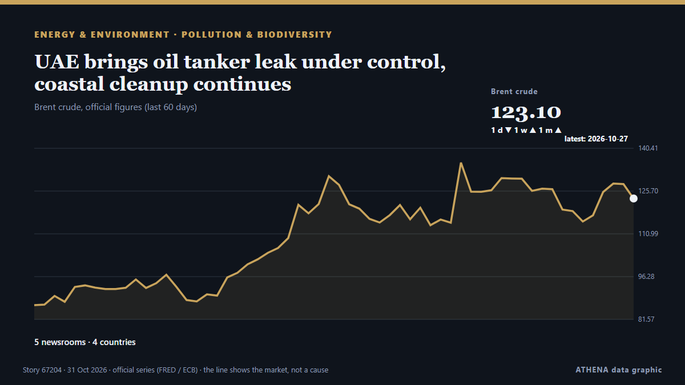

Pollution et biodiversité
| 18 oct. | 1 |
|---|---|
| 19 oct. | 0 |
| 20 oct. | 0 |
| 21 oct. | 0 |
| 22 oct. | 1 |
| 23 oct. | 0 |
| 24 oct. | 0 |
| 25 oct. | 0 |
| 26 oct. | 1 |
| 27 oct. | 5 |
| 28 oct. | 8 |
| 29 oct. | 0 |
| 30 oct. | 8 |
| 31 oct. | 0 |
Les titres sont affichés en anglais, tels que publiés.

UAE brings oil tanker leak under control, coastal cleanup continues
DUBAI: The UAE has brought an oil tanker leak under control, with no new leakage detected, as environmental cleanup operations continued along coastlines affected by the spill, the Emirates News… de Arab News
Charity crowdfunds millions to buy historic English estate
After a two-year campaign, the Wildlife Trusts acquired the entire 3,800-hectare Rothbury Estate in northern Northumberland, marking England’s largest land acquisition in three decades. de Free Malaysia Today
Greener front gardens could help combat air pollution and summer heat
Scientists call for incentives to preserve vegetation as study highlights benefits of plentiful planting in London Your front garden could be a first line of defence against air pollution, according… de Guardian Environment
Yemeni army investigating reports of Houthi use of toxic gases in Taiz
Military says civilians and resistance fighters suffered suspected poisoning and suffocation after alleged use of toxic substances in projectiles. de Anadolu Agency (English)
World is far behind on ecosystem restoration target, UN says
SINGAPORE: Restoration is underway on 252 million hectares (973,000 square miles) of degraded ecosystems across 149 countries, the United Nations' environment agency said on Thu... de Oman Observer
COP17 | Jiangsu Showcases Biodiversity Conservation in Action
Media OutReach Newswire – 29 October 2026 – Jiangsu Day, a themed event at the China Pavilion during the 17th meeting of the Conference of the Parties to the Convention on Biological Diversity… de Laotian Times
Lahore ranks second globally as air pollution persists across Punjab
Air quality remains a concern for residents, children, older people, those with respiratory, heart conditions. de Express Tribune
Girl seriously injured in wolf attack at German wildlife park
The eight-year-old was in an enclosure with other children and a staff member when she was attacked. de BBC News
Kunming Biodiversity Fund approves 9 new global conservation projects
By Zoila Palma: The European Union is pressing for more countries to contribute to global biodiversity conservation as disagreements over funding responsibilities remain a major issue at the COP17… de Breaking Belize News
Summoned to meeting with Singapore leaders, top honchos of 10 firms pledge to cooperate with haze probes
In a rare meeting attended by Deputy Prime Minister Gan Kim Yong, Senior Minister K Shanmugam and Minister for Sustainability and the Environment Grace Fu, Singapore outlined proposed legislative… de CNA (Channel NewsAsia)
UAE oil spill: Sharjah closes all beaches as clean-up effort continues
UAE authorities are working to contain an oil spill from a supertanker in the Arabian Gulf, with Umm Al Quwain Municipality intensifying efforts to limit pollution and protect marine habitats. de The National
Africa: CBD COP17 - Why African Countries Struggle to Mobilise Biodiversity Funding - AfDB Official
[Premium Times] The African Development Bank says African governments must make biodiversity conservation a national investment priority and integrate it into development planning to close the… de AllAfrica
Revised plans cut 1,200 homes to preserve more greenery at Maju Forest and Gillman Barracks following public feedback
SINGAPORE: Singapore will build about 1,200 fewer homes at Maju Forest and Gillman Barracks, retaining more greenery after public feedback raised concerns about forest loss, wildlife habitats and… de The Independent Singapore
Oxygen bus now drives around Kalimantan, Indonesia, as residents struggle to breathe amid fires
INDONESIA: With residents of Kalimantan, Indonesia, having to deal with the severe haze due to widespread forest and peat wood fires, the administration of Palangka Raya has deployed an oxygen bus… de The Independent Singapore
Singapore looks to strengthen laws to tackle transboundary haze
"The haze is preventable and unacceptable." de Mothership
Additional $4.7M earmarked for ongoing UN Biodiversity Conference in Yerevan
The conference reviews a 2022 agreement that aims to protect 30% of land and sea by 2030. de The Straits Times
Runners swap streets for shopping malls as haze chokes Singapore
Fitness enthusiasts take refuge from choking haze as Indonesian wildfires drive air quality to its worst levels in over a decade, cancelling outdoor activities. de Free Malaysia Today
Iran says ready to help draft global treaty on plastic pollution
Tehran, IRNA — Iran has declared its readiness to contribute effectively to drafting a global treaty to combat plastic pollution, stressing that the agreement must respect countries’ national… de IRNA (English)